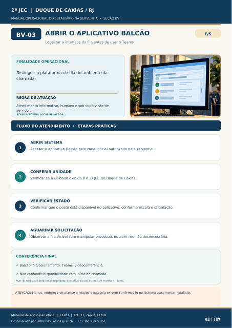

ABRIR O APLICATIVO BALCÃO
Localizar a interface da fila antes de usar o Teams
FINALIDADE OPERACIONAL
Distinguir a plataforma de fila do ambiente da chamada.
REGRA DE ATUAÇÃO
Atendimento informativo, humano e sob supervisão de servidor.
STATUS: ROTINA LOCAL RELATADA
FLUXO DO ATENDIMENTO • ETAPAS PRÁTICAS
ABRIR SISTEMA
Acessar o aplicativo Balcão pelo canal oficial autorizado pela serventia.
CONFERIR UNIDADE
Verificar se a unidade exibida é o 2º JEC de Duque de Caxias.
VERIFICAR ESTADO
Confirmar que o posto está disponível no aplicativo, conforme escala e orientação.
AGUARDAR SOLICITAÇÃO
Observar a fila visível sem manipular processos ou abrir reunião desnecessária.
CONFERÊNCIA FINAL
Balcão: fila/acionamento. Teams: videoconferência.
Não confundir disponibilidade com início de chamada.
FONTE: Registro operacional do projeto: aplicativo Balcão distinto do Microsoft Teams.
ATENÇÃO: Menus, endereço de acesso e rótulos desta tela exigem confirmação no sistema atualmente instalado.
Ver também o infográfico original (página 94)
